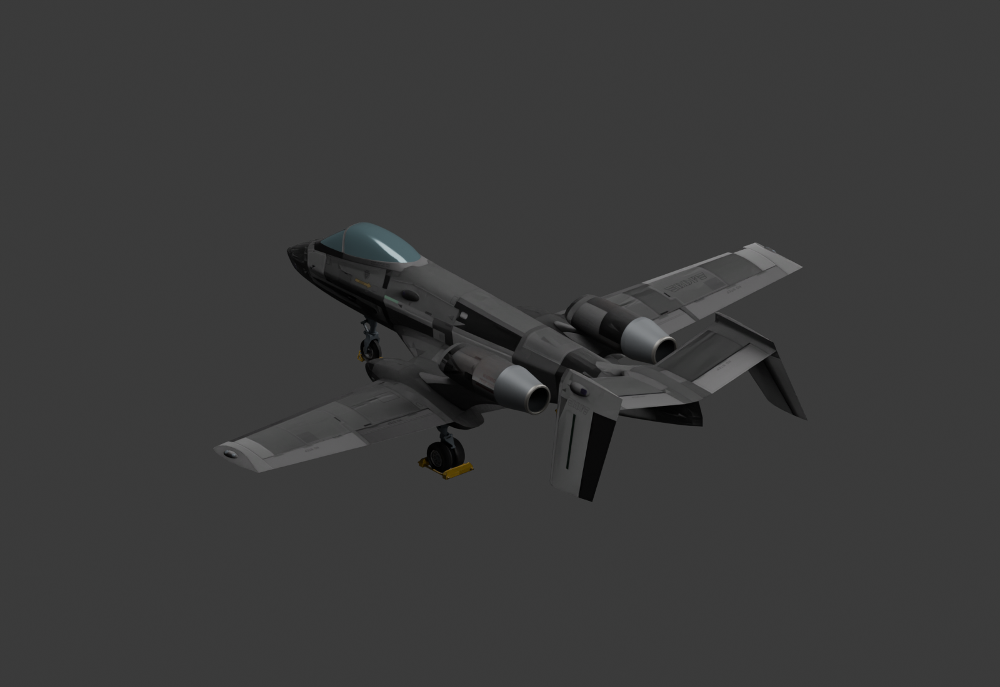

Familiar airframe.
Jet-powered.
The A-19 Brawler trades its propellers for twin conventional jets, while keeping the cockpit, armour and weapons you know.
v0.1.3 · Available in NOMM · Offline-only enforced · Work in progress · For Nuclear Option 0.34.6 · AI-assisted

A-19J sits alongside the original Brawler, retaining its familiar equipment and airframe.
Conventional jets with native spool, fuel and sound behaviour. No afterburners or thrust vectoring.
Tapered metal housings, circular rims and recessed interiors complete both engine tips.
Get ready to fly
Requires Nuclear Option, BepInEx 5 Mono x64 and Blueprinter 2.1.1.
- Close the game and install BepInEx 5 Mono x64 and Blueprinter 2.1.1 if needed.
- Download A19J.dll and place it in
Nuclear Option/BepInEx/plugins/A19J/. - Start the game and find A-19J under Encyclopedia → Aircraft.
- For a solo flight test, add A-19J to a single-player Mission Editor mission.
A-19J is available in the official NOMM catalog. Refresh the catalog and search for A19J. Registry submission accepted 8 November 2026 ↗. This is an offline-only development prerelease. Existing missions may restrict aircraft availability.
Faction stock that works
Version 0.1.3 fixes the missing inventory count. Existing missions offer A-19J from the faction's A-19 stock pool, with shared consumption and factory replenishment. Explicit A19J supply entries retain independent stock, including zero.
Update the mod and restart the mission to load the fix.
Still taking shape
This is a development build. Registration, live offline spawning and a restrained engine run-up passed. Online use is disabled by connection-mode and spawn guards. Full flight handling and combat balance still need testing.
Feedback and suggestions are welcome. Share an issue or idea ↗
View the exhaust close-up ↗AI Disclaimer
AI assistance was used to write the mod's code, create the custom exhaust housings, rims and interior geometry, and help assemble, compile and test the mod. The description and documentation were also prepared with AI assistance.
The base aircraft model and reused game assets come from Nuclear Option. No extracted game assets are distributed with the plugin. Credits and notices ↗